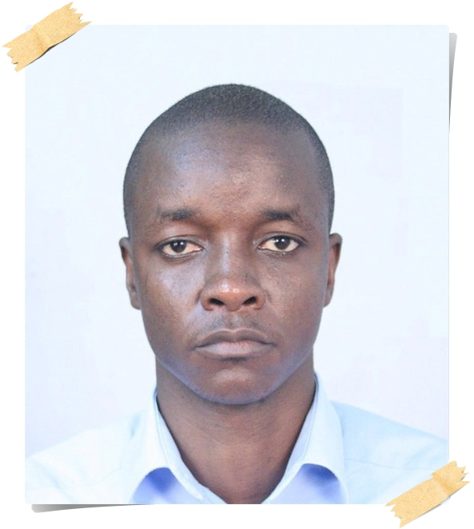

HENRY GEOFFREY MAEDA
Since completed my studies in college I have been employed by the Weights and Measures Agency back in 2008.
I have been working with Weights and Measures Agency in different part of the country.
I started in Arusha Region as my first post. I spent three years, then moved to Dar es Salaam office.
In Dar es Salaam office I was placed at Ports Unit office on ports and terminal inspections services for Weights and Measures.
I was also conducting a study on natural gas measurement operation and supervision for the Weights and Measures Agency.
Later in 2019. I moved to Ruvuma Weghts and Measures Office,then got back to Dar es Salaam again. This time in Kinondoni Office and later to Ilala office which am currently working.
I was born in 1982, am Tanzanian married to my wife Oliva. I have been blessed with three beutiful kids.
I live with my family in Dar Es Salaam a business capital of Tanzania in outskirt of the city of Dar es Salaam called Kigamboni.
I am enthusiastic in technologies especially Blockchain technologies, Machine Learning and Data Science.
Work Experience
Arusha Region(2008 - 2011) :Weights and Measures Inspector
- Providing the necessary advice and support to the government, industry, commerce and the public direct and implement the legal control of the measurement instruments and systems
- Conduct surveillance inspections and verifications on the sale of goods including pre-packages and measurement instruments and systems
- Reject and order to be corrected, replaced, or removed those measuring instruments or systems that are found identify contraventions of the Law on Metrology and prosecute
- Implement the Law on Metrology through interactions with individual businesses
- Carrying out type evaluation activities in legal metrology
2012 - 2019: Weights and Measures Inspector at Weights and Measures Ports Office
- Calibrations and verifications of oil and gas meters and its ancillary devices
- Oil and gas measurement auditing
- Bulk storage tanks Inspections
- Marine surveying for petroleum products
- Depot and terminal tank measurement operations Inspections
Projects
Tanzania Natural Gas Sector Development 2012-2014
.Prepared and presented a study to Ministry of Industry and Trade on Natural Gas Legal Requirement in Measurement operations and metrological supervision.
Identify fiscal points for Weights and Measures to implement the metrological control.
Study the Natural gas pipeline Integrity and Measurement point for government fiscal point
Liquefied Petroleum Gas (LPG) Regulatory Work 2011/2013
Contributed to the Liquefied Petroleum Gas (LPG) Measurement Regulation for Weights and Measures. The regulation is basically an instrument for protecting consumer in LPG sales
Education
| Institutions | Location | Course | Graduation Date |
|---|---|---|---|
| Dar es Salaam Institute of Technology (DIT) | Dar es Salaam | Master’s Degree in Computational Science and Engineering | 2023 |
| College of Business Education(CBE) | Dar- Es- Salaam | Advanced Diploma in Legal Science and Industrial Metrology | 2004/2007 |
| Fluid Research Institute (FCRI) | India | Oil and Gas Flow Measurement and Control Technique and Standards | 2011 |
| Tosamaganga High School | Iringa | Advanced Certificate of Secondary Education (Physics, Chemistry and Advanced Mathematics) | 2001/2003 |
| Kigamboni Secondary School | Dar- Es- Salaam | Certificate of Secondary - Science and Mathematics | 1997/2000 |
Technical Training
IDC Technologies Malaysia
- Instrumentation engineering for Oil and Gas facilities
- Design of functional specification for Industrial automation systems SCADA, PLC, and DCS
- Practical troubleshooting and problem solving of industrial data communications
- Practical Scada Systems for Industry
FMC Technologies USA
- Positive Displacement Flowmeter:Smith Meter Accuload III Meter operations
Emerson Process Management Abu Dhabi
- Oil and gas metering for Fiscal and custody transfer
BEIS: Office of Regulatory Delivery Teddington,United Kingdom
- International Legal Metrology Training
Computer Skills
Diploma in Information and Communication Technology
- Hardware and Software Technologies
- Web Development Techonologies such as CSS, HTML and JavaScript.
Ms Office Application, Ms Power BI
- Microsoft Applications : Ms Word, Excel, Access and Publisher.
Statistical and Scientific Application Software
- SPSS, R, . Lab VIEW